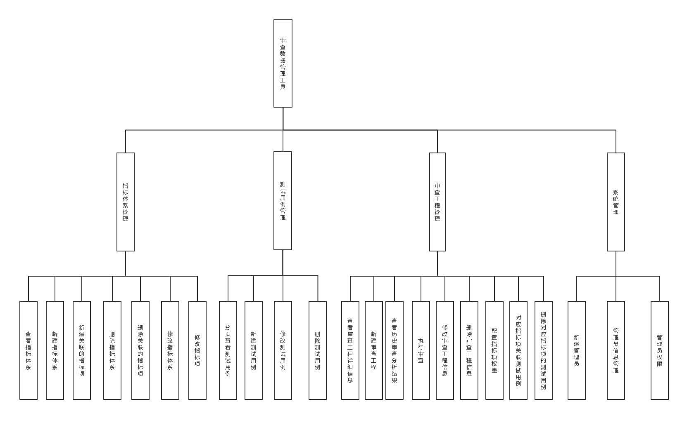

作者: Wenshuo Zhang [email: m15101166628@163.com]
在网络安全复杂化、网络威胁全球化的今天，关键网络基础设施已成为 网络攻击的主要目标，并可能引发极为严重的灾难性后果。特别是网络产品 和服务的供应链风险是关键信息基础设施面临的主要安全风险之一。同时我 国的网络安全审查制度也在逐步完善当中。国家于 2015 年 7 月和 2016 年 11 月分别颁布了《国家安全法》、《网络安全法》，于 2017 年 2 月颁布了《网络 产品和服务安全审查办法》。与此同时，随着信息技术的飞速发展，各种软件 和服务的产生和迭代速度非常快。在不断提供丰富的功能和便捷的服务的同 时已经深入到政府工作，企业运作和人们的日常生活之中。因此，应对各种 产品和服务的审查工作的执行不仅仅需要制度的保证还需要能提供便捷的审 查数据管理工具。目前类似的审查数据管理工具实现了基于指标项的权重进 行加权打分的功能。非常值得我借鉴。但是目前的审查数据管理工具对审查 得到的历史结果数据没有进行有效的管理。对于一个产品或服务的审查流程 往往不会只有一次。通过记录以往审查的结果能够了解产品的改进情况和变 化。与此同时，审查数据管理工具由于将机密数据集中管理，存在被网络攻 击和窃取的风险。
实现一套能够对不同产品和服审查指标体系进行统一集中化管理，还能够提供以指标体系为基础的不同审查工程的流程化管理方式，提高审查管理效率以及便捷性的审查数据管理工具。工具应包含指标体系管理、审查工程管理、测试用例管理、系统管理4个模块。 在软件测试阶段分析本工具容易受到的网络攻击。采用相应的技术加以防范。

Read Code in Wenshuo Zhang's respository